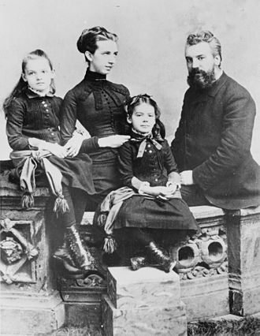
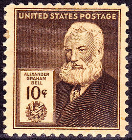

Alexander Graham Bell
„Când se închide o ușă, se deschide o altă ușă; dar de multe ori privim cu atât de mult regret ușa închisă, încât nu îi vedem pe cei care ne deschid."
Date personale
Alexander Graham Bell a fost unul dintre primii inventatori ai telefonului, a lucrat în comunicarea cu surdo-muții și a deținut peste 18 brevete.
Alexander Graham Bell a fost un om de știință și inventator din Scoția, cel mai cunoscut pentru inventarea primului telefon de lucru în 1876 și pentru fondarea companiei Bell Telephone în 1877.
De asemenea, el a co-fondat Compania Americană de Telefon și Telegraf (AT&T) în 1885.
Copilăria
În copilărie, tânărul Bell a arătat o curiozitate pentru lumea sa; el a adunat exemplare botanice și a efectuat experimente de la o vârstă fragedă.
Cel mai bun prieten al său a fost Ben Herdman, un vecin a cărui familie opera o fabrică de făină.
La vârsta de 12 ani, Bell a construit un dispozitiv de casă care combina paletele rotative cu seturi de perii de unghii, creând o mașină simplă de decupare care a fost pusă în funcțiune la moară și folosită constant mai mulți ani.
În schimb, tatăl lui Ben, John Herdman, le-a oferit ambilor băieți un mic atelier în care să „inventeze”.
Pasiuni
Încă din copilărie, Bell a arătat o pasiune pentru natură și un talent pentru artă, poezie și muzică care a fost încurajat de mama sa.
Fără o pregătire formală, a stăpânit pianul și a devenit pianistul familiei.
În ciuda faptului că era în mod normal liniștit și introspectiv, el a dezvoltat abilități de mimică și „trucuri de voce” asemănătoare cu ventrilocismul care îi distra în permanență pe oaspeții familiei în timpul vizitelor lor ocazionale.
Bell a fost, de asemenea, profund afectat de surditatea treptată a mamei sale (a început să-și piardă auzul la vârsta de 12 ani) și a învățat un limbaj special, astfel încât să poată sta la o parte și să afle în tăcere conversațiile care se învârt în jurul salonului familiei.
De asemenea, el a dezvoltat o tehnică de a vorbi în tonuri clare și modulate direct pe fruntea mamei sale, în care ea îl va auzi cu o claritate rezonabilă. Preocuparea lui Bell pentru surditatea mamei sale l-a determinat să studieze acustica .
Familia
Alexander Bell s-a născut în Edinburgh , Scoția, pe 3 martie 1847. Casa familiei se afla la South Charlotte Street și are o inscripție din piatră care o marchează drept locul natal al lui Alexander Graham Bell. El a avut doi frați: Melville James Bell (1845-1870) și Edward Charles Bell (1848-1867). Tatăl său a fost profesorul Alexander Melville Bell , fonetician , iar mama sa a fost Eliza Grace (născută Symonds).
Tatăl , bunicul și fratele lui Bell au fost asociați cu munca de elocutiune și vorbire și atât mama, cât și soția lui erau surde, influențând profund activitatea lui Bell.
În 1865, când familia Bell s-a mutat la Londra, Bell s-a întors la Weston House ca asistent de maestru.
Pe parcursul sfârșitului anului 1867, sănătatea sa a scăzut în principal din cauza epuizării. Fratele său mai mic, Edward „Ted”, avea acelasi parcurs imunitar, suferind de tuberculoză . În timp ce Bell și-a revenit (referindu-se apoi la el însuși în corespondență drept „AG Bell”) și a servit anul viitor ca instructor la Somerset College, Bath, Anglia, starea fratelui său s-a deteriorat. La moartea fratelui său, Bell s-a întors acasă în 1867. Fratele său mai mare Melville se căsătorise și se mutase.
Cu toate acestea, în mai 1870, Melville a murit din cauza complicațiilor provocate de tuberculoză, generându-se o criză familială. Tatăl său suferise de asemenea o boală debilitantă mai devreme în viață și fusese restabilit la sănătate de o convalescență în Newfoundland.
Brevetul telefonic principal, 174465, 7 martie 1876
Educatie
În copilărie, Bell, ca și frații săi, și-a primit școala timpurie acasă de la tatăl său. La o vârstă fragedă, a fost înscris la Royal High School , Edinburgh, Scoția, pe care a părăsit-o la 15 ani. La vârsta de 16 ani, Bell și-a asigurat o poziție de "profesor-elev" de elocuțiune și muzică, în Weston House Academy la Elgin, Moray , Scoția. Deși a fost înscris ca student în limba latină și greacă, el a instruit el însuși cursurile în schimbul consiliului și 10 GBP pe sesiune. În anul următor, a participat la Universitatea din Edinburgh; s-a alăturat fratelui său mai mare Melville care s-a înscris acolo anul precedent. În 1868, cu mult timp înainte de a pleca în Canada cu familia, Bell și-a terminat examenele de matriculare și a fost acceptat pentru admiterea la University College London .
Casatoria si copiii
La 11 iulie 1877, la câteva zile după înființarea companiei Bell Telephone , Bell s-a căsătorit cu Mabel Hubbard (1857-1923) la moșia Hubbard din Cambridge, Massachusetts . Au avut patru copii:
Elsie May Bell (1878–1964) care s-a căsătorit cu Gilbert Hovey Grosvenor de renume National Geographic ,
Marian Hubbard Bell (1880–1962), care a fost denumită „Daisy”, căsătorita cu David Fairchild ,și
doi fii care au murit la la naștere (Edward în 1881 și Robert în 1883).

Alexander Graham Bell, soția sa Mabel Gardiner Hubbard , și fiicele lor Elsie (stânga) și Marian ca. 1885
Primele experimente cu sunet
Tatăl său a încurajat interesul lui Bell pentru discurs și, în 1863, i-a luat pe fiii săi să vadă un automat unic dezvoltat de Sir Charles Wheatstone, bazat pe lucrarea anterioară a baronului Wolfgang von Kempelen . „Omul mecanic” rudimentar a simulat o voce umană. Bell a fost fascinat de mașină și după ce a obținut o copie a cărții lui von Kempelen, publicată în limba germană pe care a tradus-o laborios, el și fratele său mai mare Melville și-au construit propriul cap de automat. Tatăl lor, extrem de interesat de proiectul lor, s-a oferit să plătească pentru orice provizii și i-a încurajat pe băieți garantandu-le un „mare premiu” dacă vor avea succes.Alexander a renunțat să constate că lucrările de ultimă generație au fost întreprinse deja de Helmholtz care a transmis sunete vocale cu ajutorul unei „contracțiuni” similare a furculiței de tuning, Bell a ignorat cartea savantului german. Lucrând din propria sa traducere eronată a unei ediții franceze, Bell a făcut apoi fortuit o deducție care ar sta la baza întregii sale lucrări viitoare de transmitere a sunetului, raportând: „Fără a ști prea multe despre subiect, mi s-a părut că dacă sunetele vocale ar putea fi produse prin mijloace electrice, așa ar functiona si la consoane, deci ar putea articula vorbirea ”. Ulterior, el a remarcat: "Am crezut că Helmholtz a făcut-o ... și că eșecul meu se datora doar ignoranței mele asupra electricitatii. A fost o gafă valoroasă ... Dacă aș fi putut să citesc limba germană în acele zile, eu s-ar putea să nu fi început niciodată experimentele mele! "
Receptor fotofon, o jumătate din sistemul de comunicații optice fără fir Bell , cca. 1880
Actor care îl înfățișează pe Alexander Graham Bell într-un film silențios din 1915. Prezintă primul emițător telefonic ( microfon ) al lui Bell , afișat pentru prima dată la Expoziția centenară din 1876, Philadelphia.
Telefonul
Până în 1874, lucrările inițiale ale lui Bell la telegraful armonic au intrat într-o etapă formativă, progresele realizându-se atât la noul său „laborator” din Boston (o unitate închiriată), cât și la casa familiei sale din Canada. În timp ce lucra în acea vară la Brantford, Bell a experimentat cu un " phonautograf ", o mașină asemănătoare stiloului care putea atrage forme de unde sonore pe sticla afumată, urmărind vibrațiile lor. Bell a crezut că ar putea fi posibilă generarea de curenți electrici ondulatori care corespundeau undelor sonore. De asemenea, Bell a crezut că mai multe trestii de metal reglate la frecvențe diferite ca o harpă ar putea converti curenții ondulatori în sunet. Dar nu a avut un model de lucru care să demonstreze fezabilitatea acestor idei.
În 1874, traficul de mesaje telegrafice s-a extins rapid și, în cuvintele președintelui Western Union , William Orton , a devenit „sistemul nervos al comerțului”.
Brevetarea
În 1875, Bell a dezvoltat un telegraf acustic și a întocmit o cerere de brevet pentru acesta.Brevetul lui Bell 174.465, a fost eliberat lui Bell la 7 martie 1876 de către Oficiul de Brevete din SUA . Brevetul lui Bell a cuprins „metoda și aparatul de a transmite sunete vocale sau de altă natură telegrafic ... prin producerea de ondulații electrice, asemănătoare cu vibrațiile aerului care însoțesc sunetul vocal sau alt sunet" Bell a revenit în Boston în aceeași zi și a doua zi a reluat munca, desenând în caiet o diagramă similară cu cea din brevetul lui Gray.
La 10 martie 1876, la trei zile de la eliberarea brevetului său, Bell a reușit să-și facă telefonul să funcționeze, folosind un emițător lichid similar cu designul lui Gray. Vibrația diafragmei a făcut ca un ac să vibreze în apă, variind rezistența electrică din circuit. Când Bell a rostit fraza „Mr. Watson — Vino aici - vreau să te văd” în emițătorul de lichide, Watson, ascultând capătul de primire într-o cameră alăturată, a auzit clar cuvintele.
Deși Bell a fost și este încă acuzat că a furat telefonul de la Gray, Bell a folosit proiectarea emițătorului de apă a lui Gray doar după ce brevetul lui Bell a fost acordat și doar ca dovadă a conceptului științific experiment, pentru a dovedi lui propria satisfacție că „discursul articulat” inteligibil (cuvintele lui Bell) ar putea fi transmis electric. După martie 1876, Bell s-a concentrat pe îmbunătățirea telefonului electromagnetic și nu a folosit niciodată transmițătorul lichid al lui Gray în demonstrații publice sau în scopuri comerciale.
Desen de brevet telefonic al lui Alexander Graham Bell , 7 martie 1876
Concurenta
Așa cum se întâmplă uneori în descoperirile științifice, se pot produce evoluții simultane, după cum demonstrează o serie de inventatori care lucrau la telefon. De-a lungul unei perioade de 18 de ani, Bell Telephone Company confruntat cu 587 de provocări în instanță pentru a brevetelor sale, inclusiv cinci , care a mers la Curtea Suprema a SUA , dar nici unul nu a avut succes în stabilirea priorității asupra brevetului original , Bell și Compania de telefonie telefonică Bell nu a pierdut niciodată un caz care a trecut la o etapă finală a procesului.Aparițiile constante ale lui Bell în instanță, necesare în procesele judiciare, au dus în cele din urmă la demisia sa din companie.
Alte inventii
Deși Alexander Graham Bell este cel mai adesea asociat cu invenția telefonului, interesele sale erau extrem de variate. Gama inventivă a lui Bell este reprezentată doar parțial de cele 18 brevete acordate doar în numele său și cele 12 pe care le-a împărtășit colaboratorilor săi. Acestea includ 14 pentru telefon și telegraf, patru pentru fotofon , unul pentru fonograf , cinci pentru vehicule aeriene, patru pentru „hidroavioane” și două pentru seleniucelule. Invențiile lui Bell au cuprins o gamă largă de interese și au inclus un sacou metalic pentru a ajuta la respirație, audiometrul pentru a detecta probleme de auz minore, un dispozitiv pentru localizarea aisbergurilor, investigații despre cum se poate separa sarea de apa de mare și lucrul la găsirea de combustibili alternativi .
Bell a lucrat intens în cercetarea medicală și a inventat tehnici pentru predarea vorbirii la surzi. În perioada sa de laborator Volta , Bell și asociații săi au considerat impresia unui câmp magnetic pe o înregistrare ca mijloc de reproducere a sunetului. Deși trio-ul a experimentat pe scurt conceptul, nu a putut dezvolta un prototip funcțional. Au abandonat ideea, fără să-și dea seama niciodată că au văzut un principiu de bază care, într-o bună zi, și-ar găsi aplicația în casetofon , hard disk și unitatea de dischete și alte suporturi magnetice .
Casa proprie a lui Bell a folosit o formă primitivă de aer condiționat. El a anticipat, de asemenea, preocupările moderne cu lipsa de combustibil și poluarea industrială.
Fotofonul
Bell și asistentul său Charles Sumner Tainter au inventat împreună un telefon fără fir, numit fotofon , care a permis transmiterea atât a sunetelor cât și a conversațiilor umane normale pe un fascicul de lumină . Bell credea că principiile fotofonului sunt „cea mai mare realizare” a vieții sale, spunând unui reporter cu puțin timp înainte de moartea lui că fotofonul era „cea mai mare invenție pe care am făcut-o vreodată, mai mare decât telefonul”. Fotofonul a fost un precursor al sistemelor de comunicare cu fibră optică care a obținut o utilizare populară în toată lumea în anii '80. Brevetul său principal a fost emis în decembrie 1880, cu multe decenii înainte ca principiile fotofonului să devină utilizate în mod popular.
Detectorul de metale
Bell este , de asemenea , creditat cu dezvoltarea una dintre primele versiuni ale unui detector de metale , prin utilizarea unui echilibru de inducție, după împușcarea Președintelui SUA , James A. Garfield în 1881. Potrivit unor conturi, detectorul de metale a lucrat impecabil în teste , dar a făcut să nu găsească glonțul lui Guiteau , în parte, deoarece rama patului metalic pe care se afla președintele a deranjat instrumentul.
Hidroplanul
Articolul științific american din martie 1906 al pionierului american William E. Meacham a explicat principiul de bază al hidrocarburilor și hidroplanelor . Bell a considerat invenția hidroplanului ca o realizare foarte semnificativă. Pe baza informațiilor obținute din acel articol, el a început să schițeze concepte despre ceea ce se numește acum o barcă cu hidrofoil. Bell și asistentul Frederick W. „Casey” Baldwin au început experimentele cu hidrofor în vara anului 1908 ca un posibil ajutor pentru decolarea avionului din apă. Baldwin a studiat activitatea inventatorului italian Enrico Forlanini și a început testarea modelelor. Acest lucru i-a condus pe el și pe Bell la dezvoltarea de nave hidroavioane practice.
Conacul Brodhead – Bell, reședința familiei Bell din Washington, DC, din 1882 până în 1889
Bell HD-4 pe un test de testare ca. 1919

Bell la deschiderea liniei de lungă distanță de la New York la Chicago în 1892
AEA Dart de argint ca. 1909
Statuia clopotului de A. E. Cleeve Horne , similară cu stilul Memorialului Lincoln , în porticul frontal al clădirii Bell Telephone din Brantford, Ontario, The Telephone City . [N 26] (Curtoazie: Brantford Heritage Inventory, Orașul Brantford, Ontario, Canada)

Un citat de Alexander Graham Bell gravat în peretele de piatră din Capela Păcii din Grădina Internațională a Păcii (în Manitoba Canada și Dakota de Nord, SUA).

Muzeul Bell , Cape Breton , parte a site - ului Alexander Graham Bell National Historic

Ediția AG Bell din 1940
Bell, un elev al Universității din Edinburgh , Scoția, primind un titlu de doctor onorific în Drepturi (LL.D.) la universitate în 1906